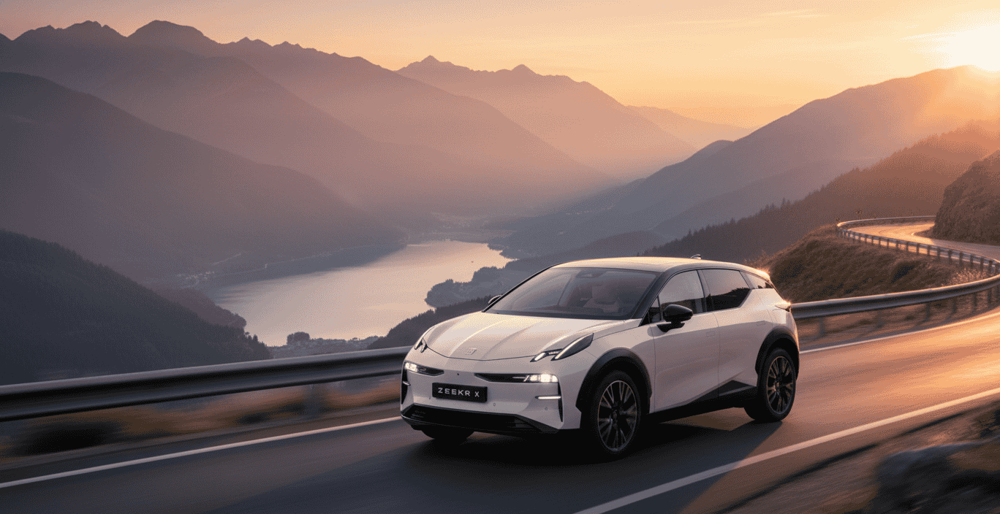
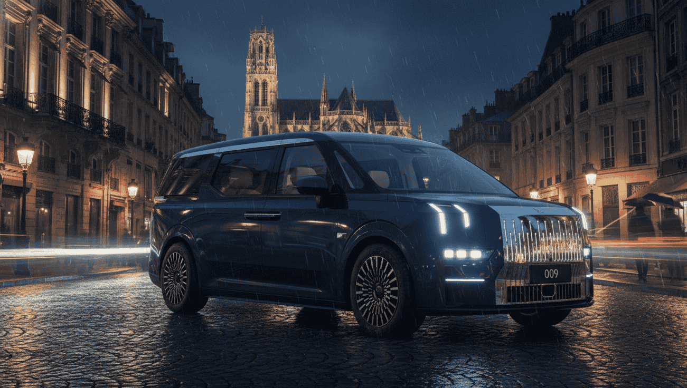
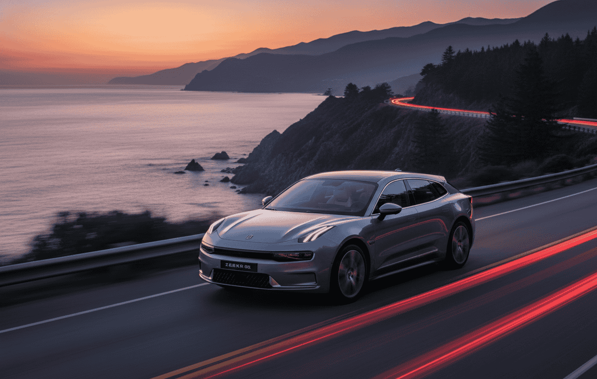

Qué es Zeekr y por qué importa su llegada
Zeekr no es una marca china más. Es la división de lujo tecnológico del grupo Geely, el mismo conglomerado que controla Volvo, Polestar, Lynk&Co y Smart. Nació en 2021 específicamente para competir con Tesla en el segmento premium, y en China ya ha vendido más de 250.000 unidades. En Europa lleva dos años disponible en Alemania, Países Bajos, Suecia y Noruega, donde sus modelos han recibido críticas muy favorables.
Lo que hace a Zeekr interesante no es solo el precio, sino la combinación de tecnología: todos sus modelos se construyen sobre la plataforma SEA (Sustainable Experience Architecture) de Geely, la misma base técnica del Volvo EX30 y el Smart #1, con arquitecturas de 400V o 800V según el modelo, y velocidades de carga que en el caso del 7GT llegan a 480 kW, lo que significa pasar del 10% al 80% en 13 minutos.
📌 El contexto del grupo Geely:
Zeekr comparte ingeniería con Volvo y Polestar, pero a precios considerablemente más bajos. El Zeekr 7GT, por ejemplo, arranca en 45.990€ con 421 CV y arquitectura de 800V. Un Polestar 2 con especificaciones similares cuesta unos 20.000€ más. Esa es la propuesta de valor de la marca.
Cuándo llega, dónde se vende y quién lo distribuye
Zeekr ha elegido a Salvador Caetano Auto como distribuidor exclusivo para España y Portugal. Se trata de uno de los grupos de automoción más grandes de la Península Ibérica, que ya gestiona marcas como Xpeng, Voyah y Dongfeng en nuestro mercado. Conocen bien el segmento eléctrico chino premium y tienen infraestructura de posventa consolidada.
Los primeros modelos con precios confirmados (X, 7GT y 001) llevan a la venta desde el 4 de marzo de 2026. La disponibilidad física en concesionarios está prevista para el segundo trimestre de 2026, cuando la red de puntos de venta y servicio técnico estará operativa en las principales ciudades españolas.
- 📅 Precios confirmados desde: 4 de marzo de 2026
- 🏪 Disponibilidad en concesionarios: segundo trimestre de 2026
- 🤝 Distribuidor oficial: Salvador Caetano Auto
- 🌐 Web oficial España: zeekr.com/es
- 📝 Registro de interés: disponible ya en la web para recibir novedades y contacto de concesionario
La red de concesionarios en España está en proceso de definición. Si quieres ser de los primeros en ser contactado cuando abra el punto de venta más cercano, el registro en la web oficial ya está disponible.
Zeekr X: el más asequible, desde 37.990€

El Zeekr X es el punto de entrada a la gama en España. Es un SUV compacto de 4,43 metros, un segmento C donde compite con el BYD Atto 3, el Smart #1 o el Hyundai Kona Eléctrico. Pero los precios y las prestaciones lo sitúan un escalón por encima de la mayoría.
Versiones y precios del Zeekr X en España
- 🟢 Core: 37.990€ — Motor trasero 272 CV, batería LFP 49 kWh, 330 km WLTP
- 🟡 Long Range: 42.490€ — Motor trasero 272 CV, batería NCM 69 kWh, 446 km WLTP
- 🔵 Privilege: 47.490€ — Doble motor (tracción total) 428 CV, batería NCM 69 kWh, 425 km WLTP
La carga rápida máxima es de 150 kW (CCS Combo), lo que permite pasar del 10% al 80% en unos 30 minutos. No es la cifra más impresionante de la gama, pero es completamente funcional para un coche de uso urbano y periurbano.
El equipamiento de serie desde la versión base incluye cámara 360°, techo panorámico fijo, asientos calefactables delanteros y traseros, Apple CarPlay y Android Auto, faros LED inteligentes y un paquete completo de asistentes ADAS. Para un coche que arranca en 37.990€, el nivel de equipamiento resulta difícil de igualar entre los rivales europeos.
💡 ¿Qué versión del Zeekr X tiene más sentido?
Si tu uso es mayoritariamente urbano, la versión Core a 37.990€ tiene los números justos pero suficientes. Si haces algún viaje ocasional, la Long Range a 42.490€ es la más equilibrada: 446 km WLTP dan mucho margen real. La Privilege es tentadora por los 428 CV, pero en ciudad no vas a notar la diferencia y consumes más batería.
Zeekr 7GT: el familiar ultrarrápido, desde 45.990€

El 7GT es probablemente el modelo más interesante de la gama para el usuario español. Es un fastback familiar de 4,82 metros de largo, con una silueta de línea baja y un maletero de 456 litros más frunk de 65 litros. No tiene rival directo en España: el Mercedes-Benz CLA Shooting Brake y, cuando llegue, el BMW i3 Touring, son los únicos comparables.
Pero lo que lo hace verdaderamente especial es la tecnología de carga. Es el primer coche eléctrico a la venta en España con una tasa de carga máxima de 480 kW en corriente continua, que permite pasar del 10% al 80% en apenas 13 minutos en la versión LFP. A efectos prácticos, en un Supercharger V3 o en un cargador Ionity de 350 kW esos tiempos serán algo mayores, pero sigue siendo extraordinariamente rápido.
Versiones y precios del Zeekr 7GT en España
- 🟢 Core Business Edition: 45.990€ — Motor trasero 421 CV, batería LFP 75 kWh, 519 km WLTP, carga del 10-80% en 13 min
- 🟡 Long Range Launch Edition: 53.390€ — Motor trasero 421 CV, batería NCM 100 kWh, 655 km WLTP, carga del 10-80% en 16 min
- 🔵 Privilege Launch Edition: 59.990€ — Doble motor (tracción total) 646 CV, batería NCM 100 kWh, 558 km WLTP, 3,3 s de 0 a 100
Todas las versiones montan arquitectura eléctrica de 800 voltios, lo que explica esa capacidad de carga excepcional incluso en la versión de acceso. El equipamiento incluye de serie pantalla multimedia de 15 pulgadas, instrumentación digital de 13 pulgadas, bomba de calor, V2L, control de crucero adaptativo y ADAS completo. Las versiones superiores añaden HUD de 35,5 pulgadas, sistema de audio premium y asientos con ventilación y masaje.
💡 ¿Qué versión del Zeekr 7GT tiene más sentido?
La Core a 45.990€ con 421 CV y 519 km WLTP ya es una propuesta extraordinaria para su precio. Pero si haces viajes largos con cierta frecuencia, la Long Range a 53.390€ y 655 km WLTP tiene un atractivo muy claro: podrás llegar de Madrid a Barcelona cargando solo una vez y con margen de sobra. La Privilege tiene los 646 CV para quien los necesite, pero en un familiar de uso cotidiano son casi redundantes.
Zeekr 001: el shooting brake premium, desde 59.990€

El Zeekr 001 es el buque insignia de la marca y su carta de presentación más ambiciosa. Es un shooting brake de 4,95 metros de longitud —casi el tamaño de un Audi A6 Avant— con un coeficiente aerodinámico de 0,23. Compite directamente con el BMW i5 Touring, el Mercedes EQE y el Porsche Taycan Sport Turismo, pero a un precio que los deja a todos en una posición incómoda.
A la venta en España desde el 4 de marzo de 2026, es el modelo de Zeekr con más historia: lleva años en el mercado chino, donde ha acumulado más de 100.000 unidades vendidas, y en Europa ya ha demostrado su madurez técnica en los mercados nórdicos y alemán.
Versiones y precios del Zeekr 001 en España
- 🟢 Long Range RWD: 59.990€ — Motor trasero 272 CV, batería NCM 100 kWh, 620 km WLTP, 0-100 en 7,2 s
- 🟡 Performance AWD: 65.990€ — Doble motor (tracción total) 544 CV, batería NCM 100 kWh, 580 km WLTP, 0-100 en 3,7 s
- 🔵 Privilege AWD: 70.990€ — Igual que Performance con equipamiento superior, asientos Nappa, audio envolvente Yamaha
- ⚫ Sport Edition AWD: 72.990€ — Versión deportiva tope de gama, llantas de 22 pulgadas, suspensión neumática
La carga rápida máxima es de 200 kW (arquitectura de 400V), lo que permite pasar del 10% al 80% en unos 30 minutos. Inferior al 7GT en este aspecto, pero muy solvente para un coche de su segmento. El equipamiento de serie incluye pantalla central de 15,4 pulgadas de aspecto flotante, instrumentación de 8,8 pulgadas, HUD, cámara HD 360° y puertas automáticas sin marco de ventanilla.
💡 ¿Qué versión del Zeekr 001 tiene más sentido?
La Long Range RWD a 59.990€ ofrece la mejor autonomía de toda la gama (620 km WLTP) y resulta más que suficiente para el 99% de los usos. La Performance AWD tiene sentido si valoras la tracción total para conducción más dinámica o condiciones de lluvia. A partir de ahí, el salto a Privilege y Sport Edition es principalmente de equipamiento y estatus.
Zeekr 7X: el SUV que aprieta al Mercedes GLC
El Zeekr 7X es el tercer modelo en llegar a España según la propia marca, junto al X y el 7GT. Es un SUV mediano del segmento D, de dimensiones similares al Mercedes GLC o el BMW iX3, pero con unas especificaciones y un precio que los ponen en una posición difícil. Mide 4,62 metros de largo con un interior muy espacioso y un maletero de 616 litros.
Versiones y precios del Zeekr 7X en España
- 🟢 Core: Precio por confirmar — Motor trasero 421 CV, batería LFP 75 kWh, 480 km WLTP
- 🟡 Long Range: Precio por confirmar — Motor trasero 421 CV, batería NCM 100 kWh, 615 km WLTP
- 🔵 Privilege: Precio por confirmar — Doble motor (tracción total) 646 CV, batería NCM 100 kWh, autonomía >550 km WLTP
Los precios exactos del 7X para España no han sido confirmados oficialmente en el momento de publicar este artículo. Teniendo en cuenta los precios del resto de la gama y los que se aplican en otros mercados europeos, se espera que la versión Core arranque en torno a los 49.000-52.000€ y que la Privilege supere los 65.000€. Actualizaremos este artículo en cuanto se confirmen.
El 7X comparte con el 7GT la arquitectura de 800V y velocidades de carga muy altas. Su equipamiento de serie incluye V2L, HUD con realidad aumentada, techo panorámico, cámara 360° y un sistema de audio Hi-Fi con subwoofer en las versiones superiores.
Comparativa de todos los modelos de un vistazo
| Modelo | Carrocería | Precio desde | CV máx. | Autonomía máx. | Carga máx. |
|---|---|---|---|---|---|
| Zeekr X | SUV compacto (C) | 37.990€ | 428 CV | 446 km WLTP | 150 kW |
| Zeekr 7GT | Fastback familiar (D) | 45.990€ | 646 CV | 655 km WLTP | 480 kW ⚡ |
| Zeekr 001 | Shooting brake (E) | 59.990€ | 544 CV | 620 km WLTP | 200 kW |
| Zeekr 7X | SUV mediano (D) | Por confirmar | 646 CV | 615 km WLTP | Alta (800V) |
¿Cuál elegir según tu perfil?
Con cuatro modelos tan distintos, la elección depende más de tu tipo de uso y presupuesto que de la marca en sí. Aquí tienes una guía rápida:
Si buscas el mejor precio de entrada
El Zeekr X Core a 37.990€ es el punto de acceso. Tiene 272 CV, etiqueta Cero y equipamiento que avergüenza a muchos europeos de precio similar. Si vives en ciudad y ocasionalmente haces algún viaje, la versión Long Range a 42.490€ añade 116 km de autonomía por 4.500€ más: probablemente merece la pena.
Si quieres la mejor tecnología al mejor precio
El Zeekr 7GT Long Range a 53.390€ es la joya de la gama. Un familiar con 655 km de autonomía WLTP, 421 CV y arquitectura de 800V que carga al 80% en 16 minutos. Por ese precio no hay nada comparable en el mercado español en este momento. Si necesitas financiación para adquirir cualquiera de estos modelos, te recomiendo consultar nuestra comparativa de mejores préstamos para coches eléctricos en España.
Si buscas un SUV familiar premium
El Zeekr 7X es el candidato, aunque habrá que esperar a que se confirmen sus precios definitivos en España. Si las cifras del resto de la gama son una referencia, puede plantarse en torno a los 50.000€ con prestaciones que superan al Mercedes GLC eléctrico.
Si quieres el tope de gama de la marca
El Zeekr 001 es para quien quiere lo mejor sin llegar a los 70.000€ de un Porsche Taycan o un BMW i5 Touring. El 001 Long Range a 59.990€ con 620 km WLTP y ese diseño de shooting brake es difícil de refutar como propuesta de valor.
🎯 Mi valoración general:
Zeekr llega tarde a España pero llega bien. Los precios son ajustados para el nivel de especificaciones que ofrecen, la tecnología de carga del 7GT no tiene igual en su segmento de precio, y el respaldo del grupo Geely (con Volvo y Polestar detrás) da garantías razonables de posventa que otras marcas chinas no pueden ofrecer. El eslabón débil es la red de concesionarios, todavía en construcción. Antes de comprar, confirma que hay un punto de servicio accesible cerca de donde vives.
Conclusión
Zeekr es una de las llegadas más esperadas al mercado eléctrico español de los últimos años. No porque sea la más barata —BYD y MG siguen siendo más asequibles en el segmento de entrada— sino porque ofrece una propuesta premium real: diseño diferencial, tecnología de carga de vanguardia y especificaciones que los alemanes y Tesla no pueden igualar a esos precios. Para entender mejor el contexto actual del mercado, te recomiendo consultar nuestro análisis sobre los coches eléctricos más vendidos en España.
Los cuatro modelos cubren un espectro muy amplio, desde los 37.990€ del X hasta los 72.990€ del 001 Sport Edition. Y con el 7GT como estrella tecnológica —480 kW de carga, 655 km de autonomía, 45.990€— Zeekr tiene un argumento muy sólido para el comprador español que quiere dar el salto a un eléctrico premium sin gastar 80.000€. Recuerda que puedes beneficiarte de las ayudas y subvenciones para coches eléctricos disponibles actualmente.
Lo más importante a recordar
- 📅 A la venta desde: 4 de marzo de 2026 (X, 7GT, 001)
- 🏪 En concesionarios físicos: segundo trimestre de 2026
- 🤝 Distribuidor: Salvador Caetano Auto (España y Portugal)
- 💶 Precio de entrada: Zeekr X Core desde 37.990€
- ⚡ Modelo estrella: Zeekr 7GT con 480 kW de carga y 655 km WLTP desde 45.990€
- 🔵 Tope de gama: Zeekr 001 Sport Edition a 72.990€
- ❓ Zeekr 7X: precios por confirmar, disponibilidad en 2026
Para comparar el Zeekr 001 con sus rivales directos, consulta nuestra comparativa BYD Seal vs Tesla Model 3. Y si el Zeekr X entra en tu presupuesto, echa un vistazo también a nuestra comparativa de los eléctricos más baratos de 2026 para ver cómo se posiciona frente a la competencia.